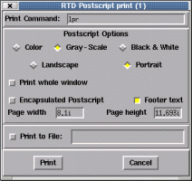
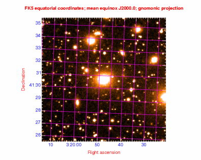
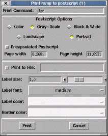
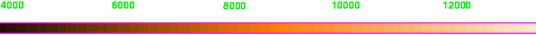

There are two basic methods to get a copy of what is displayed in the main window -- printing to postscript (which can be sent to a local printer or captured to a file) and taking a snapshot which can be saved in GIF, JPEG, TIFF or PNG formats.
To get a copy of the whole image, including any parts that are off-screen, you can only use a snapshot, but this option does allow images to be captured at full, or greater, resolution.
This is just like taking a snapshot of the window using a tool like GIMP, so requires that the window is unobscured and only creates graphics at the same resolution as the screen (printing to postscript does not have this limitation for overlay graphics), to do that select the "Visible snapshot..." or "Full snapshot..." items in the "File" menu, depending on whether you want just the visible parts or all the image and off-screen graphics.
The format of the graphics file produced is PNG by default, but will be one of the other supported formats if the selected filename has a known extension (.gif, .jpeg, .jpg, .png, .tiff or .tif).
To get a postscript printout of what GAIA is displaying you need to use the "Print...", "Image..." item in the "File" menu. This creates a dialog window as shown below. Choose the options that you require and press "Print" (this will be spooled to a local printer by default).

To get a basic colour encapsulated postscript file for inclusion in another document, select "Color", "Landscape" or "Portrait", "Encapsulated Postscript" and "Print to File:". Now enter the output file name and press "Print". The result can be viewed using a postscript viewer like ghostscript (usually the command "gv" or "gs").
The "Print whole window" option should be selected if you require a copy of all the window, including any graphics that fall off the image itself (say any axis labels drawn as part of a grid overlay). If you use this option you should probably also set the background colour of the image to white (do this using the "Image background" item in the "View" menu).

When you print, you can only get a copy of what you can see, any parts of the image (or graphics) that are not visible cannot be included in the final print (naturally this also applies to capturing). This means that you should arrange the image view carefully (see the display control topic for advice on maximising the visible area).
Another limitation is that the image is printed at the viewable resolution, but unlike capturing the overlay graphics are printed using vector graphics, so should always display at the printer resolution. If the limited image resolution is a problem you'll need to print your image some other way -- such as using the "psfcol_p" or "epsfcol_p" output devices together with the KAPPA DISPLAY program.
To get a representation of the colour ramp and how its values map to your image data values use the "Print...", "Ramp..." item in the "File menu". This produces a dialog similar to the image printing one:

Using this you can create a encapsulated postscript file for inclusion with your image. The end result should look something like:
